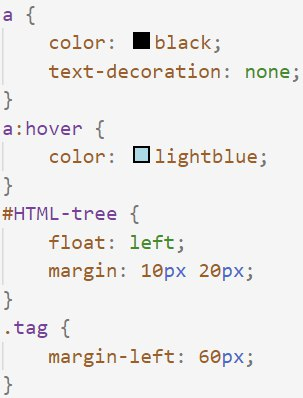

Що таке СSS?

CSS — Cascading Style Sheets —
додаток до HTML скрипта, який надає йому вигляду, стилізує,
як нескладно здогадатися з назви.
Щоб надати елементу певного стилю, його треба обрати, і після цього
в фігуних дужках встановити значення потрібних нам атрибутів.
Якщо хочнмо вибрати єдиний елемент, використовуємо його id.
Для цього слід внести це id після знаку #.
Якщо вибираємо цілий клас елементів, замість # використовуємо
просто крапку.
Ну а якщо вибираємо всі елементи якогось типу, просто зазначаємо
цей тип, без додаткових знаків.
CSS код можна вносити навіть всередині HTML скрипта, хоча це
вважається поганою приактикою.
Селектори
Як було написано раніше, слектори можуть бути як за типом елемента, так і за класом і id. Використовуючи каскадність CSS коду (якщо елемента стосуються два селектори, перевагу має той, що пізніше в коді) і specificity селекторів можна просто і ефективно вибирати групи елементів і елементи поодинці, щоб надавати їм бажаного стилю.
Specificity
Пріоритетність, тобто specificity, придумали, щоб можна було
виділяти підгрупи елементів для стилізації.
Кожен селектор має свою пріоритетність, вона виглядає
як 3 числа:
1–0–0 — селектор вибирає по id
0–1–0 — по класу
0–0–1 — по типу.
Найпріоритетнішими є селектори по id, відповідно,
найменш пріоритетними - по типу.
Це логічно, бо якщо би було навпаки, всі елементи одного типу могли б мати тільки один стиль.
Також варто зазначити, що можна було б обійтися тільки id, або
тільки класами, але викоритовувати і те, й інше, зручно.
Варто робити specificity якомога нижчою, щоб пізніше можна було далі
виділяти групи елементів. Але якщо бачите, що подібного елемента на сторінці
не буде, варто використовувати зразу id.
Розмір
Кожен елемент є прямокутником, який має свій розмір (вертикальний і горизонтальний) і місце на сторінці. Для блочних елементів розмір по горизонталі дорівнює ширині сторінки або батьківського елемента.
px
Це розмір в пікселях. Давно використовувався, тому популярний досі, але має недолік - погано масштабується.
em
1em — одна буква. Тобо цей розмір пропорційний розміру шрифта. Зручний для роботи з текстом, проте також погано масштабується.
%
Добре масштабується, проте можна використовувати лише для ширини.
vh/vw
Так само як %, але можна використовувати для будь-якого виміру. 100% = 100vw (ширина). vh — для висоти.
Колір
Колір, як і ромір, можна задати багатьма способами.
#
Цей спосіб означає задавати кольори як суміш трьох основних, але в шістнадцятковій системі числення. Наприклад #E1FF69 = 14 * 16 + 1 червоного, 15*16 + 16 зеленого і 6 * 16 + 9 синього. Це жовтий з натяком на зелений.
rgb
Це просто функція, яка приямає клількості основних кольорів як десяткові числа.
hsl
Hue – saturation – lightness. Перший аргумент — число від 1 до 360, визначає забарвлення. Друге число — відсотки, визначає насиченість. Третє - теж відсотки, визначає відстань до чорного/білого.
rgba/hsla
Додавши букву а до попередніх функцій, можна отримати можливість останнім аргументом встановлювати прозорість. Останній аргумент приймається у вигляді відсотків.
Колір можна також задавати словами, наприклад, 'cyan' або 'navy'. Таких слів для кольору зарезервовано багато.